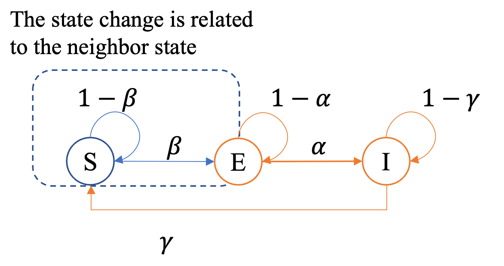

SEIS
The SEIS Model [1] assumes that infection spreads only through links between neighboring nodes in a graph \(G=(V,E)\). Each node is in one of three states: \(S\) (susceptible), \(E\) (exposed/incubating), or \(I\) (infected). A susceptible node \(i\) becomes exposed by its infected neighbors \(j \in N(i)\) with rate \(\beta\), exposed nodes become infectious with rate \(\alpha\), and infected nodes recover back to susceptible with rate \(\gamma\):
Status
During the simulation, a node can be in one of the following states:
Status |
Code |
|---|---|
Susceptible |
0 |
Infected |
1 |
Exposed |
2 |
Parameters
Name |
Value Type |
Default |
Mandatory |
Description |
|---|---|---|---|---|
data |
Data |
Yes |
Graph data. |
|
seeds |
List[int]/float in (0, 1) |
Yes |
List of seed node IDs or a ratio in (0, 1). |
|
beta |
float in [0, 1] |
Yes |
Infection probability (S→E). |
|
alpha |
float in [0, 1] |
Yes |
Incubation/progression probability (E→I). |
|
gamma |
float in [0, 1] |
Yes |
Recovery probability (I→S). |
|
device |
'cpu'/int (CUDA index) |
'cpu' |
No |
Device to run the model on. |
use_weight |
Bool |
False |
No |
Whether to use edge weights. |
rand_seed |
Int |
None |
No |
Random seed for generating the seed set. |
Implementation
Node transitions follow three rules:
if a \(S\) state node has \(I\) state neighbors, each \(I\) state neighbor exposes the \(S\) state node with probability \(\beta\) (S→E);
the \(E\) state node becomes \(I\) with probability \(\alpha\) (E→I);
the \(I\) state node is recovered to the \(S\) state with probability \(\gamma\) (I→S).
{kind=link}

We represent node states with two Boolean indicator vectors \(h, e \in \{0,1\}^N\):
\((h_i,e_i)=(0,0)\) denotes Susceptible (S),
\((h_i,e_i)=(1,1)\) denotes Exposed (E),
\((h_i,e_i)=(1,0)\) denotes Infected (I).
The update of the system at step \(k\) is decomposed into three stages:
Each infected neighbor \(j\) of node \(i\) transmits a log-probability contribution for exposure (S→E)
Node \(i\) collects contributions from all neighbors \(N(i)\) to compute its exposure probability
The indicator variables are updated with independent uniform random variables \(U_i^{\mathrm{exp}}, U_i^{\mathrm{inf}}, U_i^{\mathrm{rec}} \sim \mathrm{Uniform}(0,1)\)